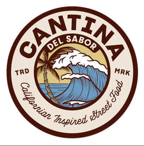

Trade Mark Journal No.2025/014 4 April 2025
UK00004177472 21 March 2025 (29,30,31,32,33,35,43)

- Class 29
- Chilli oil; Chilli beans; Preserved chilli peppers; Preserved chopped chilli peppers, not being seasonings or flavorings; Spiced oils; Spiced nuts; Cheese containing spices; Guacamole; Bean dip; Cheese dips; Cheese; Sour cream; Sour cream substitutes; Meat, fish, poultry and game; hams; bacon; meat in tins, glasses and terrines; meat extracts; conserves; compotes; preserved, dried, smoked, cooked and frozen meats and fish; soups; potato and vegetable crisps; edible oils and fats; preserves; preserves (pickles); tomato preserves; vegetable preserves; meat preserves; pork preserves; edible fungi; pickles; processed onions; prepared onions; fried onions; preparations for making soup; processed and preserved meat products; ready cooked meals of meat and fish; gherkins; dill pickles; mixed pickles; spicy pickles; bean curds; prepared meals containing (principally) bacon; prepared meals containing (principally) chicken; prepared meals containing (principally) egg; prepared meals containing (principally) fish; prepared meals containing (principally) vegetables; prepared meals containing (principally) seafood; prepared meals containing [principally] poultry; Prepared meals containing [principally] meat; Prepared meals containing [principally] game; relishes (pickles).
- Class 30
- Hot sauce; Sriracha hot chili sauce; Hot chili pepper sauce; Spices; Pepper spice; Spice mixes; Spice rubs; Spice preparations; Mixed spices; Spiced salt; Spice extracts; Pizza spices; Pepper powder [spice]; Curry spices; Marinades containing spices; Crackers flavoured with spices; Bread flavored with spices; Bread flavoured with spices; Japanese horseradish powder spice (wasabi powder); Japanese pepper powder spice (sansho powder); Spices in the form of powders; Hot pepper powder [spice]; Nachos; Corn chips; Tacos; Taco seasonings; Taco shells; Taco chips; Taco sauce; Burritos; Enchiladas; Fajitas; Quesadillas; Salsa; Salsa sauces; Food condiment consisting primarily of ketchup and salsa; Bread; salt; pasta preserves; relish sauces; chutneys; prepared pizza meals; prepared pasta meals; rice-based prepared meals; noodle-based prepared meals; salad sauces and dressings; food dressings; sandwiches; hot dogs (prepared); mayonnaise with pickles; flavourings made from pickles; onion bread; pizzas, pies and pasta dishes; noodles; spaghetti; pasta; popcorn; puddings; sauces for rice; sauces for pasta; seasoning mixes for soups; relishes; relishes (condiments); horseradish (relishes).
- Class 31
- Fresh vegetables, seeds; fresh cucumber; Chillies; Chillies (Unprocessed -).
- Class 32
- Beers; lagers; ales; non-alcoholic beverages and mixes for making beverages; nonalcoholic cocktail mixes; margarita mixes.
- Class 33
- Wine; spirits; tequila; mezcal; tequila liqueur; cocktails; pre-mixed cocktails.
- Class 35
- Advertising; import and export services; retail and wholesale services relating to the sale of food and drink; on-line retail and wholesale services relating to the sale of food and drink; provision of advisory and information services in relation to the aforesaid services.
- Class 43
- Provision of food and drink; provision of restaurant and catering facilities; services for providing food and drink; catering, restaurant, brasserie, bistro, cafe, cafeteria, canteen, coffee bar, snack bar, pub and bar services; cocktail lounge services; cafeterias; take away food services; food and drink preparation; self-service restaurant services; salad bars (restaurant services); contract food services; delicatessens (restaurants); fast-food restaurant services; information on meal preparation; provision of information, advisory and consultancy services in relation to the aforementioned services.
Urban Food Brands Limited
Representative: Birkett Long LLP